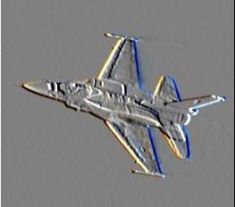
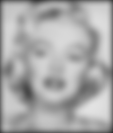

Project 1: Image Filtering and Hybrid Images

The input image of the function my_imfilter
The final goal of the project is to produce hybrid images. We applied the idea of image filtering to achieve the final goal. my_imfilter(image, filter) is the function for image filtering, which takes two arguments, image and filter. The general steps of image filtering are:
- get size of image and filter for later usages;
- separate colors into three different matrices aO, bO, cO so that we can apply filter to colors individually;
- pad the matrices aO, bO, cO so that the filter can be applied at the boundary. I choose the simplest version, padding the input image with zeros. Numbers of rows and columns are need to insert to the image are calculated. Since we always have odd sizes, we can easily have nRow = (rFilter - 1)/2 as the number of rows I need to add at the top and the bottom of the image, and have nCol = (cFilter - 1)/2 as the number of columns I need to add at the right and the left of the image. Matrix manipulation in Matlab is used to insert zeros to the matrices, aO, bO, cO.
- apply the filter to the matrices aO, bO, cO. I have a helper function named, getSum(matrix, filter, cFilter,rFilter, cImage, rImage, image) to do the computation and put the sum of the multiplications back into the correct index. cFilter is the number of columns in the filter, rFilter is the number of rows in the filter, cImage is the number of columns in the filter, and rImage is the number of row in the filter. I split the step into three sub-steps.
- loop over image. I need to apply the filter to every index in matrices, aO, bO, cO. Therefore, I start with a double for loop over rows and columns of the image.
- calculate sum of the multiplication. For each iteration in the loop above, I need to calculate the sum of the multiplications between every index in filter and corresponding index in the image. Thus, I have another double for loop to loop over row and columns of the filter.
- cut the matrices to reduce to the original size. I am supposed to return the image as in the original size. I remove the paddings I add at the beginning.
Results of Image Filtering


|
|  |
I will describe each image and their filters. I will start from top left and go to the right and then I will go to next row and also start from left to right.
- The first image is identical to the input image, because we applied identity_filter = [0 0 0; 0 1 0; 0 0 0]. Since there is only one "1" in the center of the filter matrix, the sum of the multiplications in this case will be the original value in the image in that index.
- The second image removes some high frequencies in the image by getting the average values around a 3*3 matrix as the filter.
- We directly apply Gaussian blurs for the third image. This image is much more blurry than the previous one.
- The fourth image is applied with sobel filter, which always deals with edge detection. The filter matrix we have is [-1 0 1; -2 0 2; -1 0 1]. The middle column is all zeros and we have positive numbers on the right and the negative numbers on the left. The filter generates the image with clear and sharp vertical edges. If we have filter as [-1 -2 -1; 0 0 0; 1 2 1], the filtering image will be with clear and sharp horizontal edges.
- The fifth image utilizes another algorithm to do edge detection, named laplacian filter. The filter does not clearly differentiate vertical edges and horizontal edges.
- The sixth image is a high pass image by simply subtracting the low frequency content from the original image.
Results of Hybrid Image


|
We have Einstein as low frequency image (blur filter) and Marilyn as high frequency (subtract blur image from the original image). The edges on the hybrid image are more similar to Marilyn, the high frequency image while the colors are more similar to Einstein, the low frequency image. However, when we scale down the image, we can always see the shape of Einstein in the smallest image.
|
|
|  |
I exchange two images. Even though the hybrid image is still made with Einstein and Marilyn, the shape in the current hybrid image is more like Einstein but the colors are more similar to Marilyn.